Columbia River Gorge Travel Guide
Canyon of the Columbia River in the Pacific Northwest up to 4,000 feet (1,200 m) deep, stretching for over eighty miles (130 km) as the river winds westward through the Cascade Range, forming the boundary between the state of Washington to the north and Oregon
Places to See in Columbia River Gorge
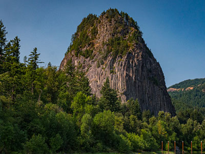
cascadevideoproductions, CC BY 2.0, via Wikimedia Commons; Image Size Adjusted

Beacon Rock State Park
Geologic preserve and public recreation area in the Columbia River Gorge National Scenic Area and includes Beacon Rock, an 848-foot (258 m) basalt volcanic plug on the north shore of the Columbia River
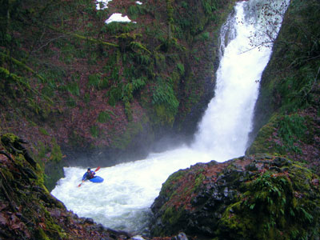
McD22 from Oregon, USA, CC BY 2.0, via Wikimedia Commons; Image Size Adjusted

Bridal Veil Falls
Waterfall located on Bridal Veil Creek in the Columbia River Gorge in Oregon
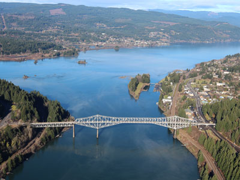
Eric Prado, CC BY-SA 4.0, via Wikimedia Commons; Image Size Adjusted

Bridge of the Gods
Steel truss cantilever bridge that spans the Columbia River between Cascade Locks, Oregon, and Washington state near North Bonneville

King of Hearts, CC BY-SA 4.0, via Wikimedia Commons; Image Size Adjusted

Chanticleer Point
Geographical landmark and first notable overlook encountered traveling east on the Historic Columbia River Highway from which to take photos of the gorge featuring Crown Point prominently
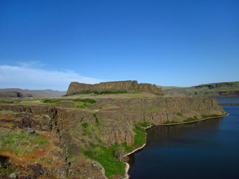
Jeffhollett, CC BY-SA 4.0, via Wikimedia Commons; Image Size Adjusted

Columbia Hills State Park
Washington state park occupying 3,338 acres on Horsethief Lake, an impoundment of the Columbia River, and includes camping, boating, picnicking, fishing, swimming, windsurfing, rock climbing, and hiking
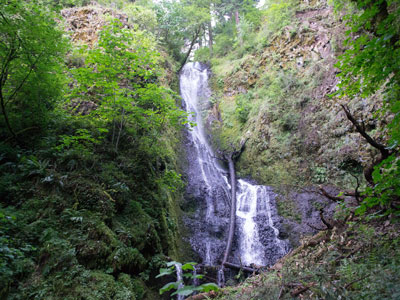
Visitor7, CC BY-SA 3.0, via Wikimedia Commons; Image Size Adjusted

Coopey Falls
Horsetail waterfall with a drop of 150 feet on Coopey Creek on the Historic Columbia River Highway
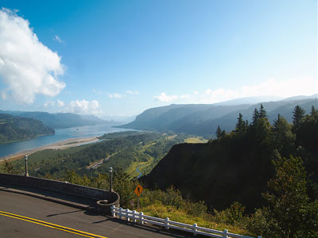
Šarūnas Burdulis from USA, CC BY-SA 2.0, via Wikimedia Commons; Image Size Adjusted
.jpg){kind=link}
Crown Point
Basalt promontory on the Columbia River Gorge and one of the scenic lookouts along the Historic Columbia River Highway, providing a panoramic view of part of the Columbia River
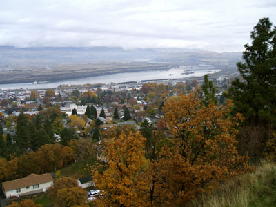
Glenn Scofield Williams, CC BY 2.0, via Wikimedia Commons; Image Size Adjusted

The Dalles
Largest city along the Oregon side of the Columbia River outside the Portland Metropolitan area
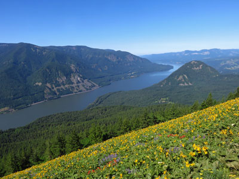
Jeffhollett, CC BY-SA 4.0, via Wikimedia Commons; Image Size Adjusted

Dog Mountain
Mountain rising above the north side of the Columbia River Gorge and from its base at 150 feet, climbs steeply to an elevation of 2,948 feet and is the site of a popular hiking trail
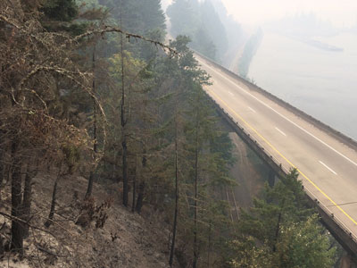
Oregon Department of Transportation, CC BY 2.0, via Wikimedia Commons; Image Size Adjusted
.jpg){kind=link}
Eagle Creek
Creek flowing for approximately 15 miles from the Thrush Pond between Eagle Butte and Tanner Butte to its mouth near Bonneville Dam and is notable for its numerous waterfalls
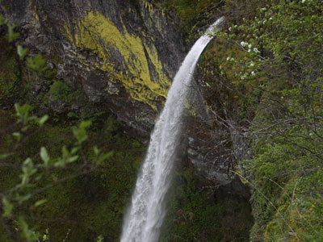
Walter Siegmund, CC BY-SA 3.0, via Wikimedia Commons; Image Size Adjusted

Elowah Falls
213-foot waterfall on the Columbia River Gorge and one of several waterfalls along McCord Creek
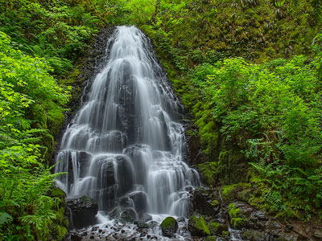
Alan D. Wilson, CC BY-SA 3.0, via Wikimedia Commons; Image Size Adjusted
.jpg){kind=link}
Fairy Falls
20-foot waterfall on the Oregon side of the Columbia River Gorge and located upstream from the much larger Wahkeena Falls
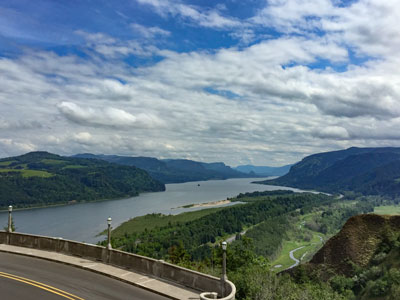
Tony Webster from Portland, Oregon, CC BY-SA 2.0, via Wikimedia Commons; Image Size Adjusted
.jpg){kind=link}
Historic Columbia River Highway
75-mile-long scenic highway between Troutdale and The Dalles, built through the Columbia River Gorge as the first planned scenic roadway in the US
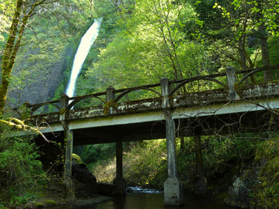
Ian Poellet, CC BY-SA 3.0, via Wikimedia Commons; Image Size Adjusted

Horsetail Falls
Dramatic roadside waterfall plunging from a basalt cliff into the Columbia River Gorge, offering easy access and striking scenic views year-round.
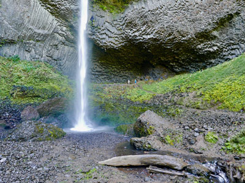
sightalks, CC BY-SA 4.0, via Wikimedia Commons; Image Size Adjusted

Latourell Falls
Waterfall along the Columbia River Gorge, within Guy W. Talbot State Park
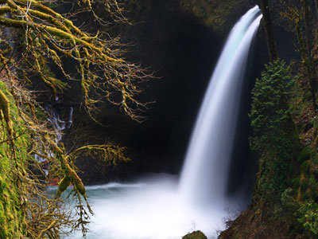
Steve Berardi, CC BY-SA 2.0, via Wikimedia Commons; Image Size Adjusted

Metlako Falls
Waterfall in the Columbia River Gorge National Scenic Area and is the furthest downstream of the major waterfalls on Eagle Creek

Multnomah Falls
Falls spanning two tiers on basalt cliffs, is the tallest waterfall in Oregon at 620 ft
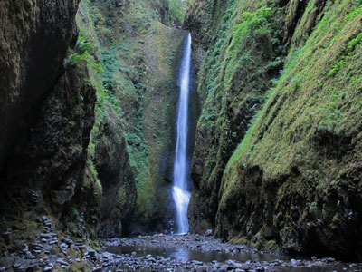
Jeffhollett, CC BY-SA 4.0, via Wikimedia Commons; Image Size Adjusted

Oneonta Gorge
Scenic gorge located in the Columbia River Gorge area designated as a botanical area because of the unique aquatic and woodland plants that grow there
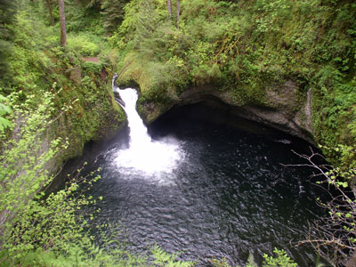
The original uploader was Onething1985 at English Wikipedia., Attribution, via Wikimedia Commons; Image Size Adjusted

Punch Bowl Falls
Waterfall 35 feet tall and 10 feet wide where Eagle Creek cuts through a narrow channel and shoots powerfully into a large bowl that resembles a punchbowl
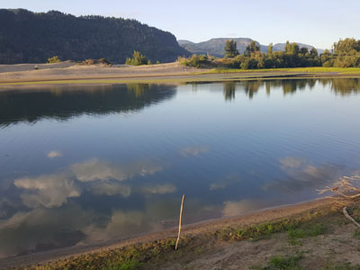
Another Believer, CC BY-SA 4.0, via Wikimedia Commons; Image Size Adjusted

Rooster Rock State Park
State park located east of Corbett, Oregon featuring Rooster Rock, a column of basalt forming a natural obelisk
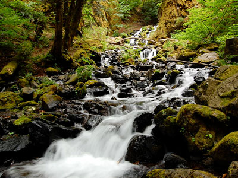
National Archives and Records Administration, Public domain, via Wikimedia Commons; Image Size Adjusted

Starvation Creek Falls
Two tier waterfall located in the Starvation Creek State Park at the north skirt of the Columbia River Gorge
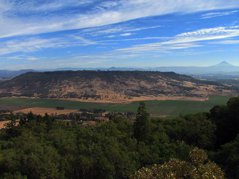
Bureau of Land Management Oregon and Washington, Public domain, via Wikimedia Commons; Image Size Adjusted
.jpg){kind=link}
Table Mountain
Peak rising on the north side of the Columbia River in Washington, where its southeast face drops 2,400 feet in less than one horizontal mile, and is topped by an almost vertical 800-foot cliff
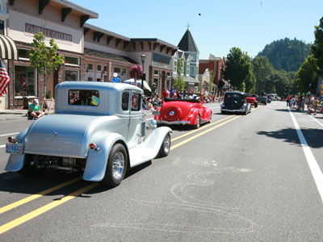
Jeff Muceus from Gresham, Oregon, USA, CC BY-SA 2.0, via Wikimedia Commons; Image Size Adjusted

Troutdale, OR
City serves as the western gateway to the Historic Columbia River Highway, the Mount Hood Scenic Byway, and the Columbia River Gorge
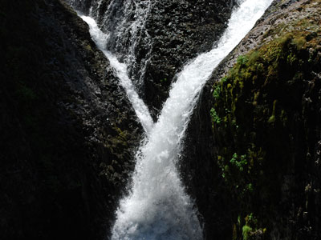
Byron Hetrick ("beeron2003"), CC BY-SA 2.0, via Wikimedia Commons; Image Size Adjusted

Twister Falls
Prominent waterfall that is formed as Eagle Creek cascades 140 feet into a narrow canyon and forms two streams that appear to "twist" around each other
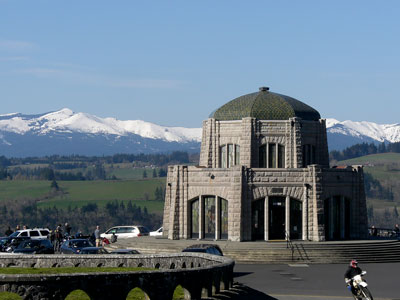
Chris[tmas K] from Portland, USA, CC BY-SA 2.0, via Wikimedia Commons; Image Size Adjusted
![Chris[tmas K] from Portland, USA](https://commons.wikimedia.org/wiki/File:Vista_House.jpg){kind=link}
Vista House
Octagonal stone building and museum situated on a rocky promontory, is 733 feet above the Columbia River, and serves as a memorial to Oregon pioneers and as a comfort station for travelers on the Historic Columbia River Highway
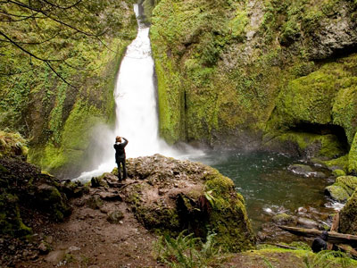
Kelvin KayKkmd at English Wikipedia, CC BY-SA 3.0, via Wikimedia Commons; Image Size Adjusted

Wahclella Falls
Waterfall along Tanner Creek, a tributary of the Columbia River, that enters the river within the Columbia River Gorge
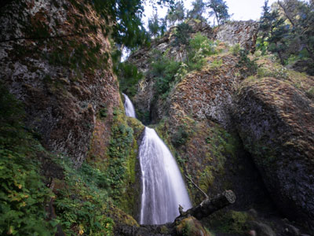
m01229 from USA, CC BY-SA 2.0, via Wikimedia Commons; Image Size Adjusted
.jpg){kind=link}
Wahkeena Falls
Picturesque Columbia River Gorge waterfall featuring multiple cascades, historic stone bridges, lush forest scenery, and access to scenic hiking trails and viewpoints.
Overview
The Columbia River Gorge is an 80-mile canyon, up to 4,000 feet deep, cut by the Columbia River through the Cascade Range and forming the Oregon-Washington border. It is a National Scenic Area, and visitors come for its waterfalls (more than 90 on the Oregon side), wildflowers, and sweeping river views.
The scenery changes from rain forest in the west to dry grassland in the east within 80 miles. Highlights include the Historic Columbia River Highway, Crown Point and Vista House, and Multnomah Falls, along with hiking, windsurfing, and orchards and wineries.
Geography
The river passes through the only sea-level route across the Cascades, and walls of basalt rise on both sides. The gorge was carved over millions of years and shaped by the Missoula Floods at the end of the last Ice Age, which sent giant walls of water through the canyon. Rainfall drops sharply from west to east, from lush forest near Troutdale to oak woodland and open grassland near The Dalles. Strong, steady winds make the gorge one of the world’s top windsurfing and kiteboarding areas.
History
Native peoples, including the Chinook, Wasco, and Wishram, fished and traded at Celilo Falls and The Dalles for thousands of years. The Lewis and Clark Expedition traveled the river in 1805, and the Barlow Road bypassed the river on the Oregon Trail. The Historic Columbia River Highway, built from 1913 to 1922, was one of the first paved scenic highways in the country. Bonneville Dam opened in 1938 and The Dalles Dam flooded Celilo Falls in 1957, and Congress created the Columbia River Gorge National Scenic Area in 1986.
Cities and Towns
Troutdale is the western gateway to the Historic Columbia River Highway. Cascade Locks is home to the Bridge of the Gods, and Hood River is a lively town known for windsurfing, breweries, orchards, and its “Fruit Loop.” The Dalles sits at the dry eastern end, with a historic downtown and the Columbia Gorge Discovery Center. Stevenson and White Salmon are on the Washington side.
National Protected Areas
The Columbia River Gorge National Scenic Area protects 292,500 acres on both sides of the river in Oregon and Washington. The gorge is also part of the Lewis and Clark National Historic Trail and the Oregon National Historic Trail. Surrounding national forest lands, which include Mount Hood and Gifford Pinchot, are not covered here.
State Parks and Historic Sites
Crown Point State Scenic Corridor features the Vista House, which opened in 1918, and Rooster Rock State Park has a long river beach. Bridal Veil Falls State Scenic Viewpoint, Shepperd’s Dell, and Dabney and Dalton Point offer more views and trailheads along the old highway. Memaloose, Viento, and Starvation Creek state parks have campgrounds and waterfalls in the east, and Mayer State Park includes Rowena Crest.
Seasons and Best Time to Visit
Spring brings peak waterfall flows and wildflowers, including balsamroot and lupine near Rowena in April and May, and the Hood River Blossom Festival. Summer is the busiest season, with windsurfing, swimming, and hiking, and Multnomah Falls requires a timed-use permit in peak season. Fall offers colorful leaves and fewer crowds, plus the harvest of apples and pears. Winter brings storms, ice, and occasional road closures, and some trails remain closed after the 2017 Eagle Creek Fire.
This article uses material from the Wikipedia article "Columbia River Gorge", which is released under the Creative Commons Attribution-Share-Alike License 3.0. Additional information is from Oregon State Parks and the Columbia River Gorge National Scenic Area page of the U.S. Forest Service.
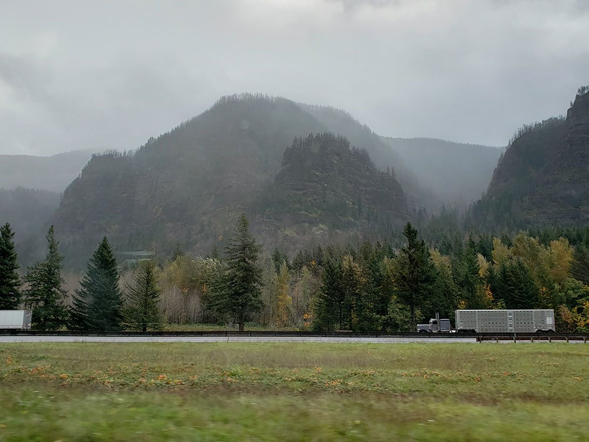
.jpg){kind=link}
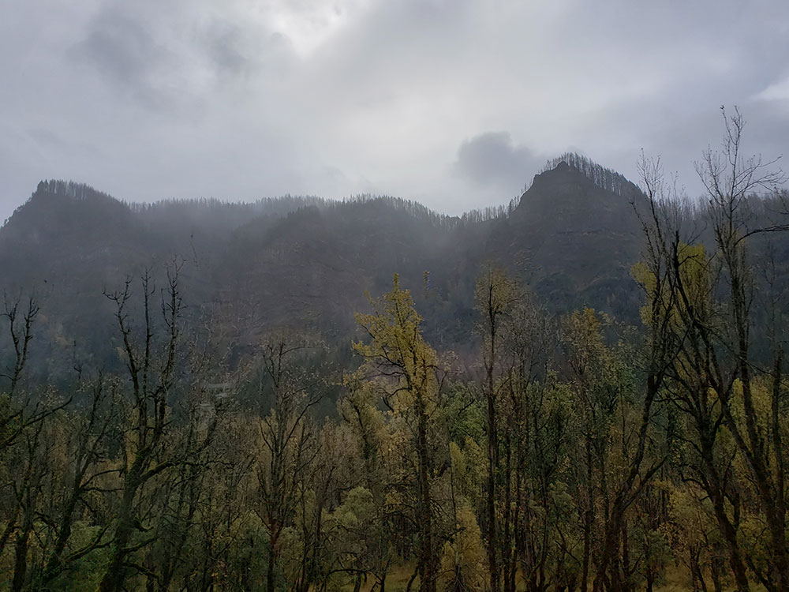
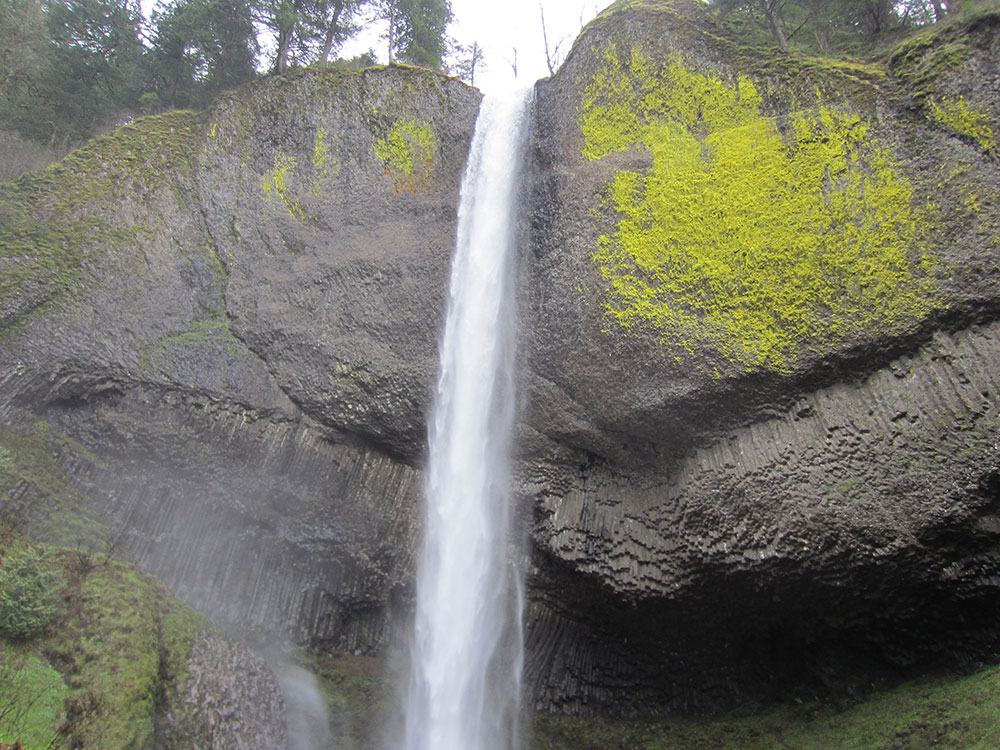